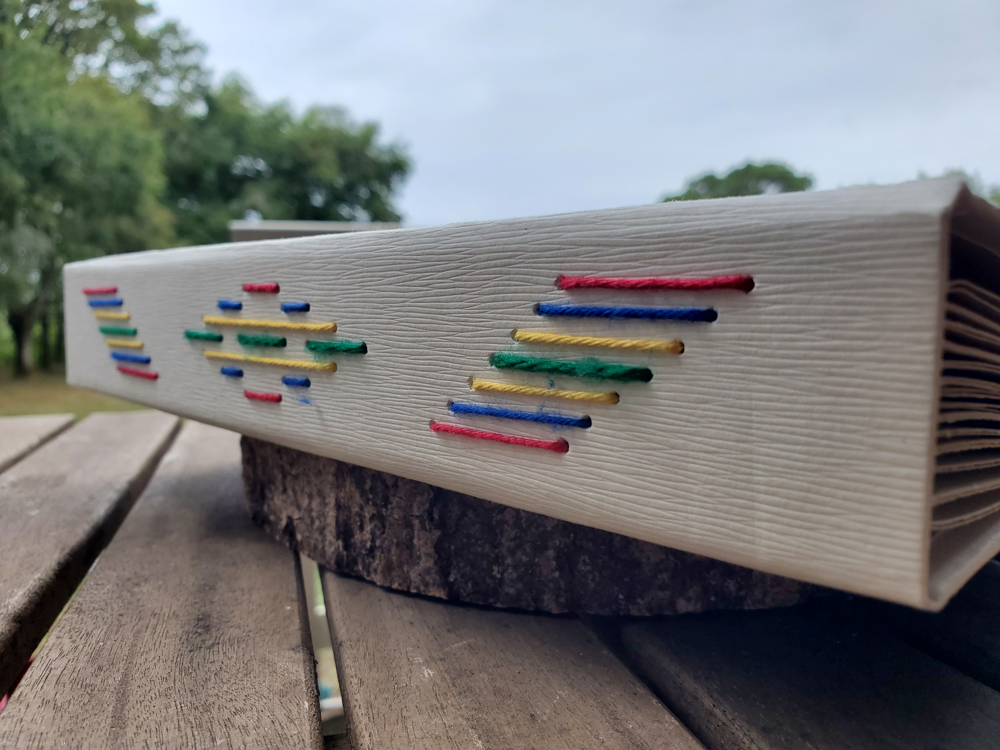
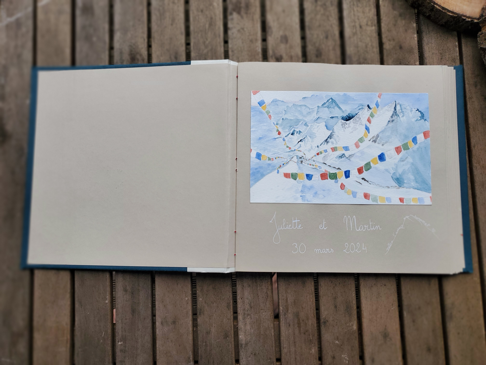

Mariages
Je propose un service de papeterie sur mesure, entièrement dédié aux mariages :
- Faire-parts d'invitation et de remerciement
- Livre d'or
- Arbre à empreintes
- Peinture "Bienvenue à notre mariage"
- Urne originale
- Menus...
J'ai à coeur de vous proposer des designs qui vous ressemblent, selon un thème et des couleurs en particulier. Voici quelques exemples de projets réalisés pour des mariages.
Album photo de mariage - thème romantique


Livre d'or de mariage - thème drapeaux péruviens



Portrait des mariés
"Juliette a su arrêter un moment inoubliable pour nous avec son pinceau et son talent. Sa peinture est magnifique et nous offre un très beau souvenir de notre mariage que nous avons encadré chez nous et que nous revoyons quotidiennement avec plaisir."
Sylvain et Sophie